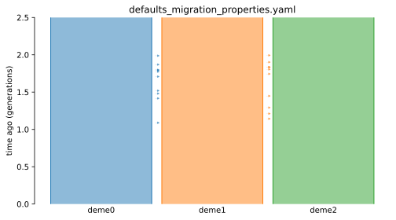
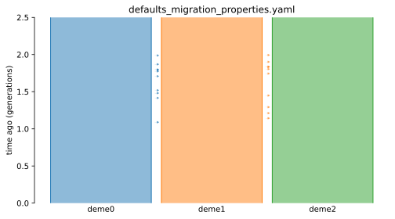

Examples¶
import math
import pathlib
import demes
import demesdraw
import demesdraw.utils
import matplotlib.pyplot as plt
# Output SVG.
from IPython.display import set_matplotlib_formats
set_matplotlib_formats("svg")
def plot_from_yaml(yaml_filename):
graph = demes.load(yaml_filename)
log_time = demesdraw.utils.log_time_heuristic(graph)
log_size = demesdraw.utils.log_size_heuristic(graph)
ax1 = demesdraw.size_history(
graph,
invert_x=True,
log_time=log_time,
log_size=log_size,
title=example.name,
)
ax2 = demesdraw.tubes(
graph,
log_time=log_time,
title=example.name,
)
plt.show(ax1.figure)
plt.show(ax2.figure)
plt.close(ax1.figure)
plt.close(ax2.figure)
print("\n\n")
# Plot each example yaml in the examples folder.
cwd = pathlib.Path(".").parent.resolve()
examples = list((cwd / ".." / "examples").glob("**/*.yaml"))
for example in sorted(examples):
plot_from_yaml(example)
/tmp/ipykernel_2486/4159689991.py:11: DeprecationWarning: `set_matplotlib_formats` is deprecated since IPython 7.23, directly use `matplotlib_inline.backend_inline.set_matplotlib_formats()`
set_matplotlib_formats("svg")


 

/opt/hostedtoolcache/Python/3.8.12/x64/lib/python3.8/site-packages/demes/demes.py:1648: UserWarning: Multiple pulses are defined for the same deme(s) at time 1. The ancestry proportions after this time will thus depend on the order in which the pulses have been specified. To avoid unexpected behaviour, the graph can instead be structured to introduce a new deme at this time with the desired ancestry proportions or to specify concurrent pulses with multiple sources.
warnings.warn(


/opt/hostedtoolcache/Python/3.8.12/x64/lib/python3.8/site-packages/numpy/ma/core.py:6849: RuntimeWarning: overflow encountered in power
result = np.where(m, fa, umath.power(fa, fb)).view(basetype)